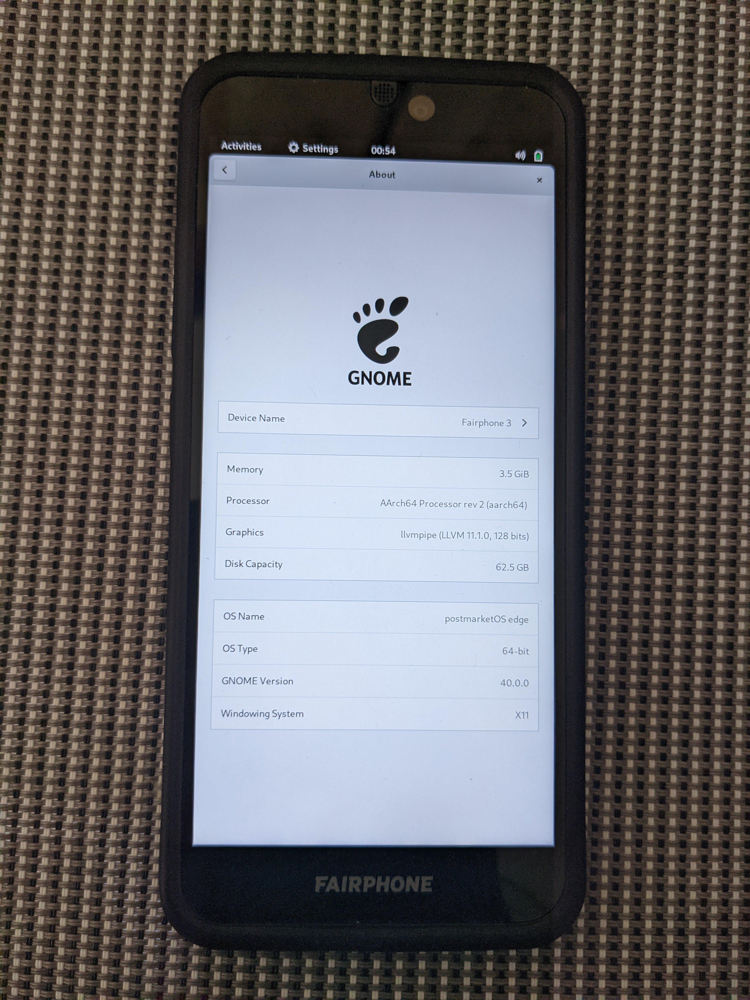

Fairphone 3 (fairphone-fp3)
|  | |
| Manufacturer | Fairphone |
|---|---|
| Name | 3 |
| Codename | fairphone-fp3 |
| Released | 2019 |
| Category | testing |
| Original software | Android 9 on Linux 4.9 |
| postmarketOS kernel | 4.9.218 |
| Hardware | |
| Chipset | Qualcomm Snapdragon 632 (SDM632) |
| CPU | 4x 1.8 GHz Kryo 250 Gold + 4x 1.8 GHz Kryo 250 Silver |
| GPU | Adreno 506 |
| Display | 1080x2160 |
| Storage | 64 GB |
| Memory | 4 GB |
| Architecture | aarch64 |
{kind=link}
| USB Networking |
Works
|
|---|---|
| Flashing |
Works
|
| Touchscreen |
Works
|
| Display |
Works
|
| WiFi |
Works
|
| FDE | |
| Mainline |
Works
|
| Battery |
Works
|
| 3D Acceleration | |
| Audio | |
| Bluetooth | |
| Camera | |
| GPS | |
| Mobile data | |
| SMS | |
| Calls | |
| USB OTG | |
| NFC | |
| Accelerometer | |
|---|---|
| Magnetometer | |
| Ambient Light | |
| Proximity | |
| Hall Effect | |
| Barometer | |
| Power Sensor | |
| Camera Flash | |
|---|---|
| Keyboard | |
| Touchpad | |
| USB-A | |
| HDMI/DP | |
| Ir TX | |
| Ir RX | |
| Stylus | |
| Haptics | |
| Ethernet | |
| FOSS bootloader | |
Contributors
Maintainer(s)
Device owners
- DancesWithCycles (Notes: tbd)
- Kf
- Mtvec
- Z3ntu
How to enter flash mode
Press Power Button and Volume Down at the same time to enter fastboot mode
To unlock bootloader go to android and to settings. in developer option unlock oem commands. Then In fastboot mode type:
fastboot oem unlock
Installation
Mainline
Follow the usual Installation guide but stop before flashing.
Download dtbo.img here. Enter fastboot mode and and flash the downloaded image to the dtbo partition:
fastboot flash dtbo dtbo.img
Install lk2nd and flash it to your device:
pmbootstrap chroot -r -- apk add lk2nd-msm8953 pmbootstrap flasher flash_lk2nd
Boot your device. Once you see the warning screen about the unlocked boot loader, press the power button twice and then immediately hold the volume down button. You should now see a flickering version of the fastboot screen. This is lk2nd's fastboot mode and you can now continue the normal flashing procedure.
Note that the boot process seems to hang without a USB cable connected.
Downstream
The normal Installation guide should work out of the box. However, if you flashed mainline before, the original dtbo.img needs to be restored. A working one can be found from the /e/ images. Unzip it and flash dtbo.img as above.
Mainlining
/proc/device-tree/model on the downstream kernel contains "MTB S3". The corresponding DTS file is arch/arm64/boot/dts/qcom/sdm450-mtp-s3-overlay.dts.
The mainline kernel used is msm8953-mainline, branch "msm8953-5.16". Note that branches of later kernel versions (e.g., 5.18) do not seem to work.
Component support table
| Description | Component | Mainline kernel | Since when |
|---|---|---|---|
| Power button | pm8953 pwrkey | Working | 5.16 |
| Volume down button | pm8953 resin | Working | 5.16 |
| Volume up button | gpio-keys | Working | 5.16 |
| Internal storage | sdhc_1 | Working | 5.16 |
| SD card | sdhc_2 | Working | 5.16 |
| Display | hx83112b | Working | 5.16 |
| Touchscreen | hx83112b | Working | unofficial |
| NFC | NXP NCI | ||
| Vibration motor | pmi632 qcom,vibrator@5700 | unofficial | |
| Notification LED | pmi632 qcom,leds@d000 | ||
| Charger | pmi632 qcom,qpnp-smb5 | ||
| Fuel gauge | pmi632 qpnp,qg | ||
| WiFi | pronto | Working | 5.16 |
| Bluetooth | pronto | Working | 5.16 |
| FP3 front camera | S5K4H7YX | ||
| FP3 rear camera | IMX363 | ||
| FP3+ front camera | S5K3P9SP | ||
| FP3+ rear camera | S5KGM1SP03-FGX9 | ||
| Camera flash | pmi632 qcom,leds@d300 | ||
| Audio codec | WCD9326 | ||
| FP3 speaker amp | AW8898 | ||
| FP3+ speaker amp | TAS2557 |
Touchscreen
A PR for a driver can be found here.
Vibration motor
The Android driver is copied into mainline here. It has been updated to register itself as a FF input device so feedbackd should work. You can test it like this:
fftest /dev/input/by-path/platform-200f000.spmi-platform-200f000.spmi:pmi632_3@3:qcom_vibrator@5700-event
Audio path
- CPU via I2S (quinary) to AW8898/TAS2557: speaker (and echo reference back)
- CPU via SLIMbus to WCD9326: microphones, headphones, etc.
GPU
Works but causes some glitches in GTK4 apps (e.g., in Phosh). A workaround seems to be to add FD_MESA_DEBUG=nobin to your environment.
Links
- pmaports!2158 Initial merge request
- Kernel source
- WIP pmaports branch